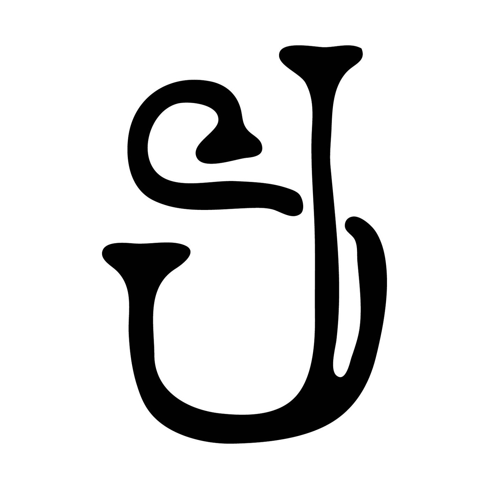
Graphic Design, Illustration & Fabrication
My name is Joshua Stacy and I am a graphic designer, illustrator, and maker in Northwest Arkansas. I am also a professional close-up magician and have been performing for over 2 decades. That background shapes how I approach design: building props and mechanisms by hand for years means solving problems where an idea only counts if the physical object actually executes it, the same standard that applies to a logo, a CAD model, or a cut sign. Below is brand identity and logo work, showing the design process from concept to final mark, along with 3D modeling and fabrication projects that carry that same standard through to a manufactured, working object.
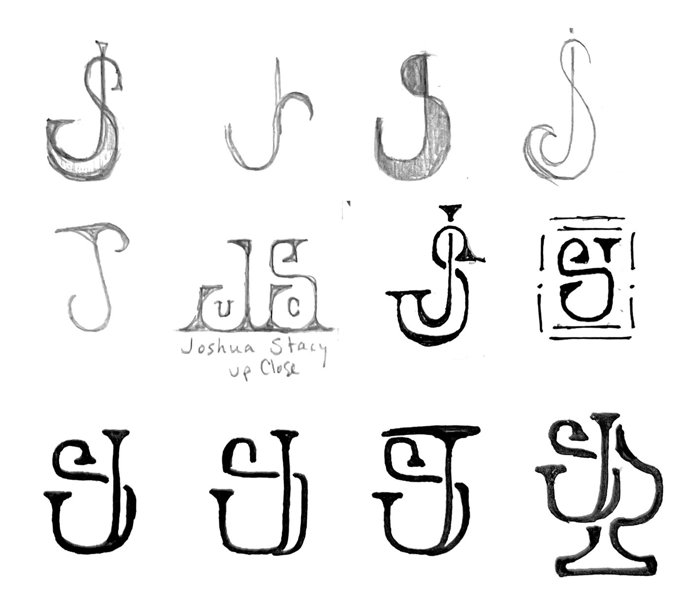
As a close-up magician, I wanted a mark that rejected the traditional iconography of the craft: no top hats, wands, or rabbits. Drawing on printer's and maker's marks instead of stage magic tropes, I built a combined JS mark that speaks to the hands-on, self-made nature of the work, since I build most of my own props and routines myself.
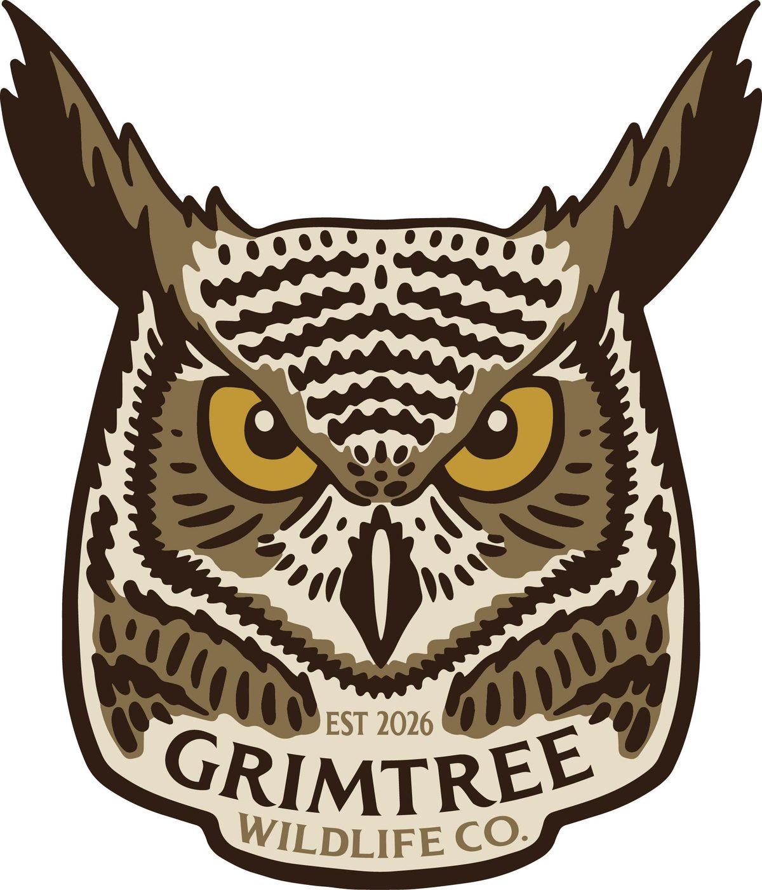
I designed this as a fictional apparel brand to work in a different visual space than typical outdoor brands like Mossy Oak or Realtree, which lean heavily on camo, deer, and antler imagery. I chose a great horned owl instead, a graceful, silent, and ancient bird of prey, and built the badge as clean embroidered artwork rather than a photography-driven mark, then mocked it up on an actual cap to test how it read as a produced good.
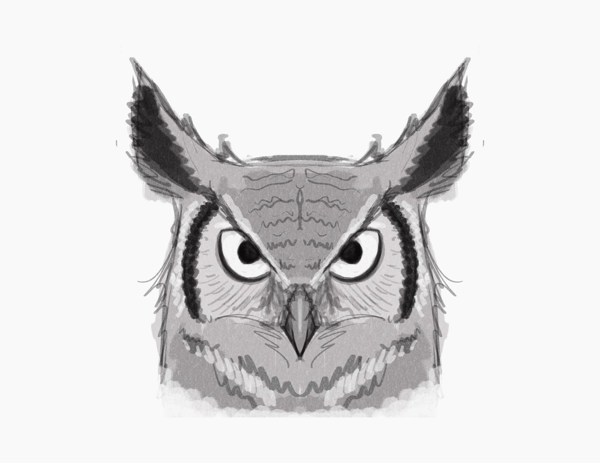
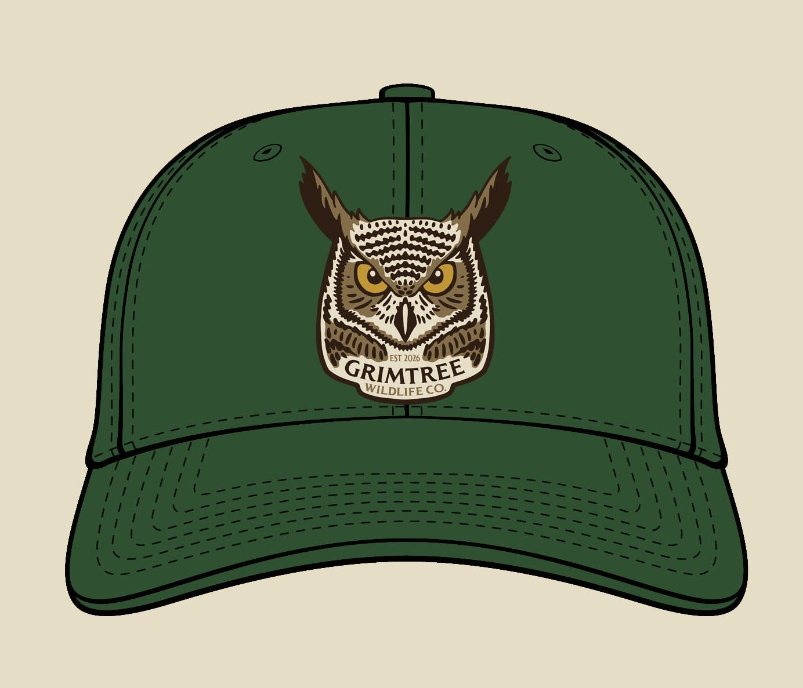
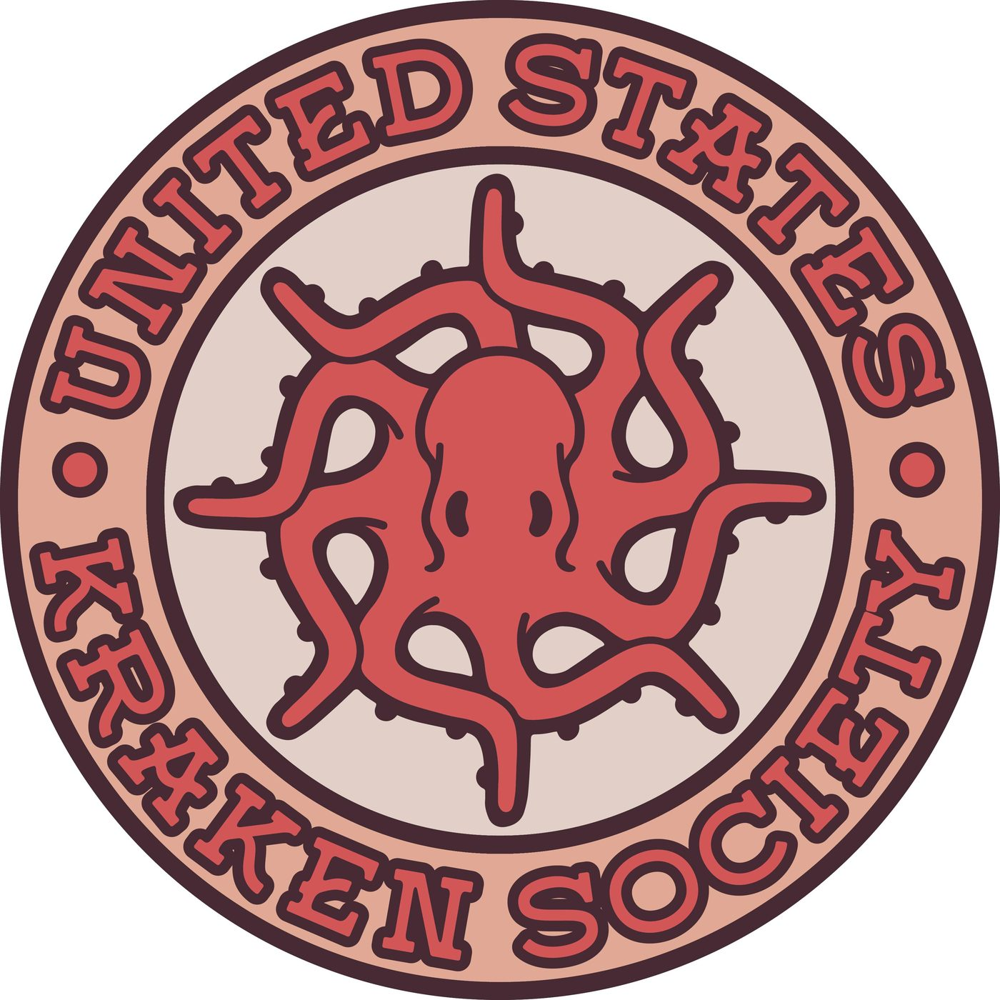
The United States Kraken Society is a fictional citizen-science organization I invented for marine biology and sailing enthusiasts. Rather than illustrate the octopus mascot straightforwardly, I noticed a ship's wheel has eight spokes and an octopus has eight tentacles, the same form in two guises, and built the mark from that overlap rather than from decoration.
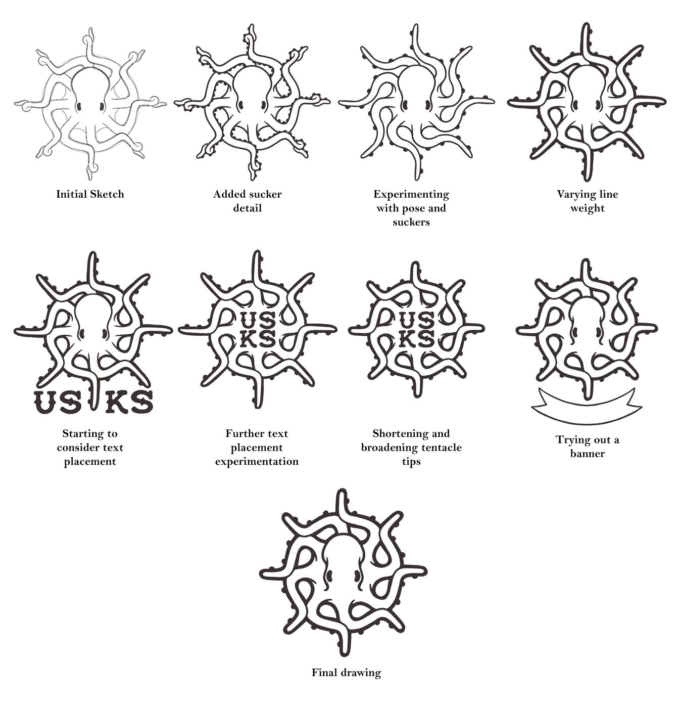
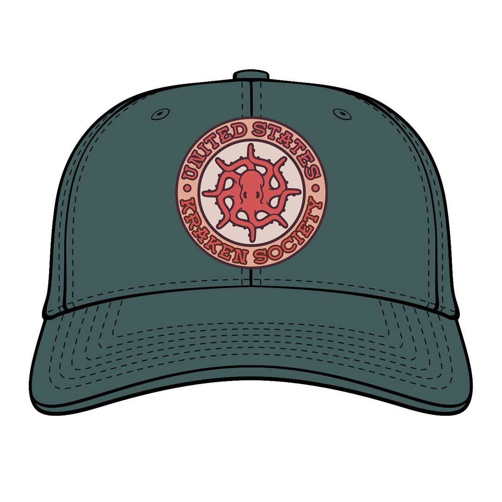
The pieces above cover branding and logo design. What follows shifts to 3D modeling and fabrication: translating a concept into a physical object that has to hold up under production, not just look right on screen. Each piece went through multiple rounds of printing and testing, adjusting geometry, tolerances, and print orientation, before I settled on a final version.
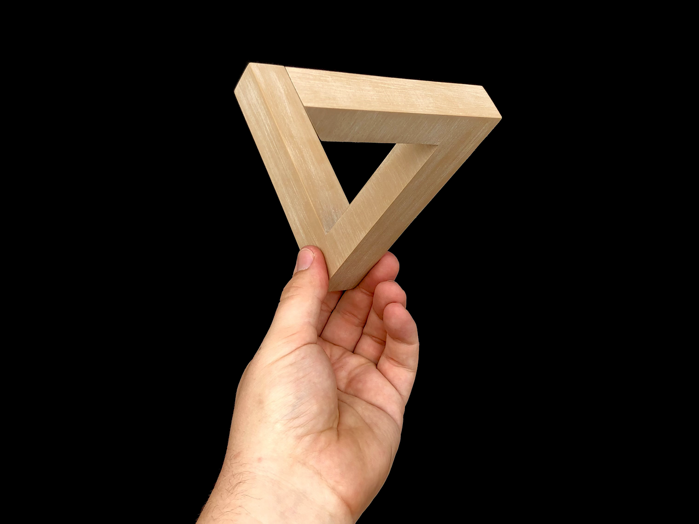
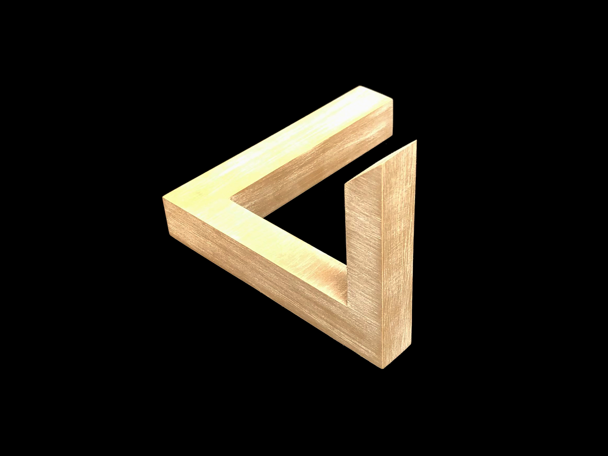
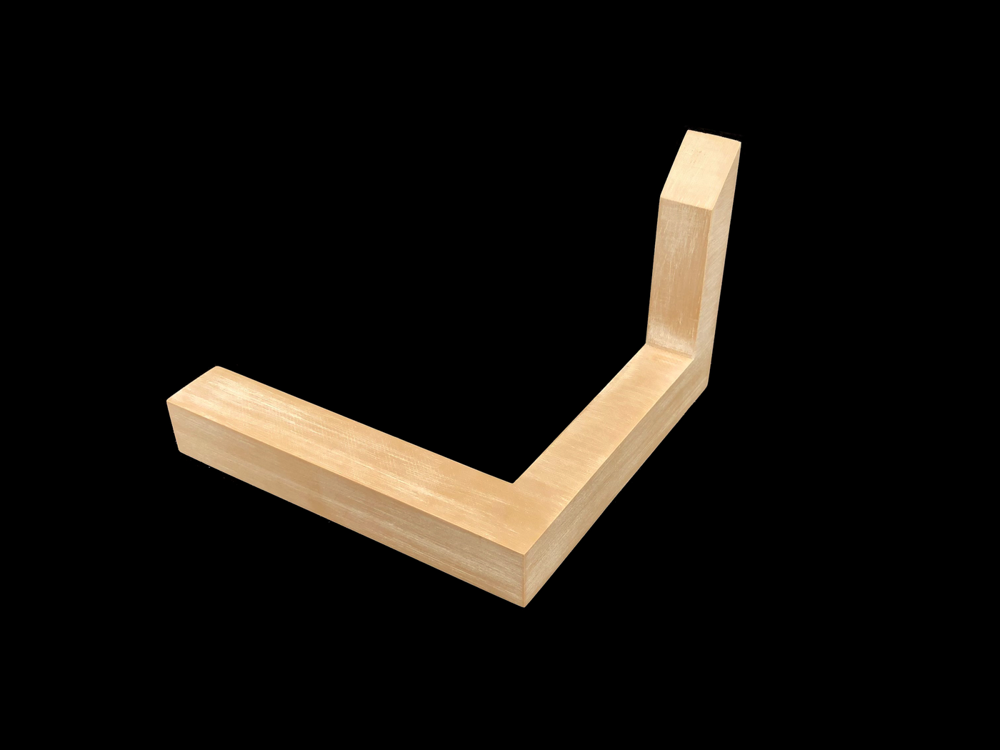
This is a 3D-printed Penrose Triangle, the classic impossible object. The illusion only resolves from one specific viewing angle, so I modeled, printed, and finished it to hold up under a camera lens rather than just on screen. It prints without supports at a 0.2mm layer height, and I hand-sanded the surface in one direction to fake a wood grain finish over a wood-PLA filament blend.
View the STL & print settings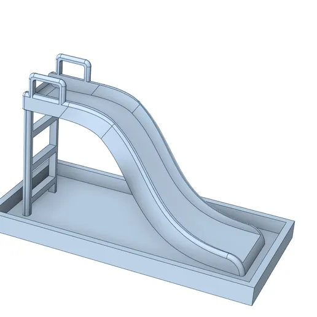
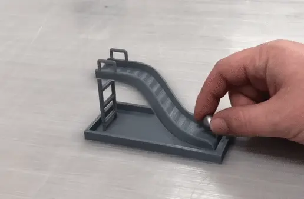
This is a 3D-printed interactive illusion where a ball appears to roll uphill on a playground slide when viewed from the correct angle. Modeled in DesignSpark Mechanical, the hardest part was tuning the curve so it would print cleanly while still reading as convincing from the illusion's specific viewing angle, balancing what the geometry needed to look right against what it needed to actually print without failing.
These three magic tricks share the same core challenge: mechanisms that have to work reliably by feel while also reading clean enough to hand to a spectator. The Coin Thru Bolt and the Ball Escape box are both print-in-place designs, meaning the moving parts are modeled with clearances tight enough to print connected and functional straight off the bed. The Christmas Cube's challenge was different: getting the negative-space image cutouts on each face to read clearly, the same problem you'd solve cutting a panel from sheet metal.